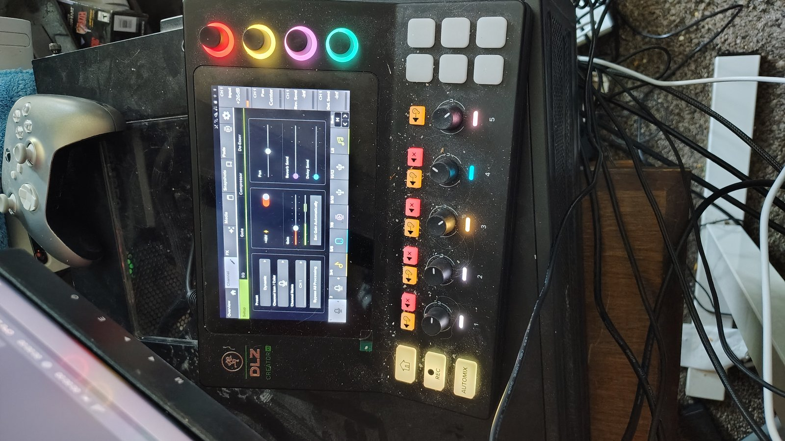

Input Device
The Mackie DLZ Creator XS exposes itself as one Windows/macOS audio device with several channels. Pick the device, then the channel your sE DynaCaster is routed to.
channelCount - it
can't do WASAPI-style exclusive per-channel addressing. If your OS/driver only ever hands
Chromium a stereo pair, per-channel selection above channel 2 won't be available here even
though the interface has more inputs. The NAudio/WASAPI version of this app doesn't have
that ceiling.
Room Noise Floor & Silence Calibration
Stay silent for a couple of seconds while this samples your room's ambient noise (fans, HVAC, PC hum, room echo). The result suggests a noise-gate threshold 6-10 dB above that floor - enough headroom to avoid gate chatter without letting noise through.
OBS Filter & Chain Recommendations
Rules react to your live level, the calibrated noise floor (if you've run one), and the workflow selected above. This is a starting point, not gospel - trust your ears.
Interactive Hardware Reference
Glowing points show what to touch based on your current recommendations. Every point
is clickable - not just the glowing ones - for the exact tap sequence and, where the
control lives on the touchscreen, an actual screenshot pulled from the official DLZ
Creator XS Owner's Manual.
Coordinates in shared/hotspots.js were measured against this exact
photo - swap in a different photo (different unit, angle, or crop) and you'll need to
re-measure them.

Click any point on the diagram for details.